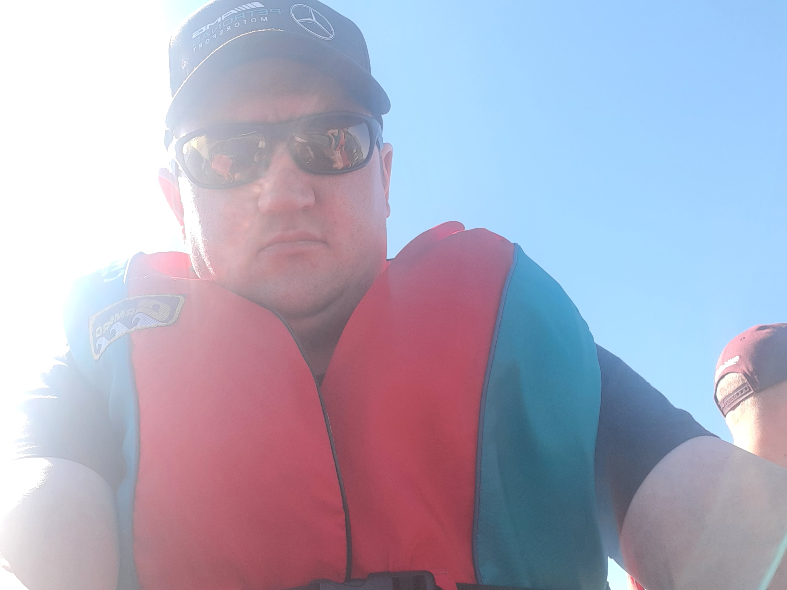
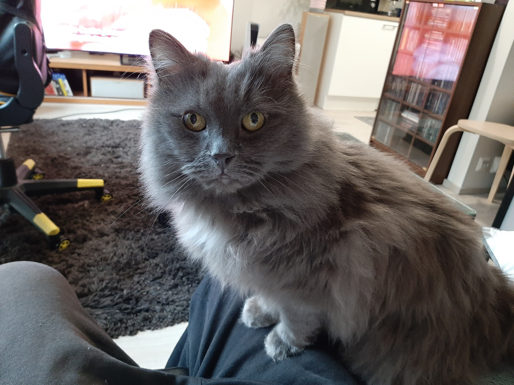

I am 40-years old guy currently applying for University of applied sciences. I just completed a professional degree in gaming. I have studied C# programming language, as well as HTML, Python and JavaScript. I have experience in game programming as well as using the Unity & Unreal game engines. On this page there is a link to my games in the navigation bar if you are interested in trying.
I listen to good music, something like Pink Floyd, Kotiteollisuus, Amorphis, Blutengel, Combichrist, Cypress Hill, Guns n' Roses, Type O Negative, Rammstein, Wumpscut, Timo Rautiainen & Trio Niskalaukaus and Velvet Acid Christ.

